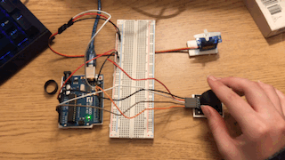
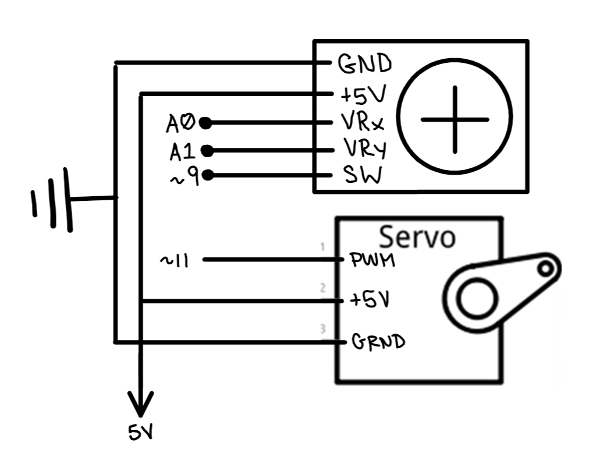

// import servo library (some servo code sampled from Knob example code by Scott Fitzgerald)
#include <Servo.h>
Servo myservo; // create servo object to control a servo
// constants won't change
int yPin = A1; // pin A0 to yPin
void setup() { // put your setup code here, to run once:
pinMode(yPin, INPUT); // initialize yPin as input
myservo.attach(11); // attaches the servo on pin 11 to the servo object
}
void loop() { // put your main code here, to run repeatedly:
myservo.write(180 - analogRead(yPin) * 0.175); // turn the servo motor that amount
}